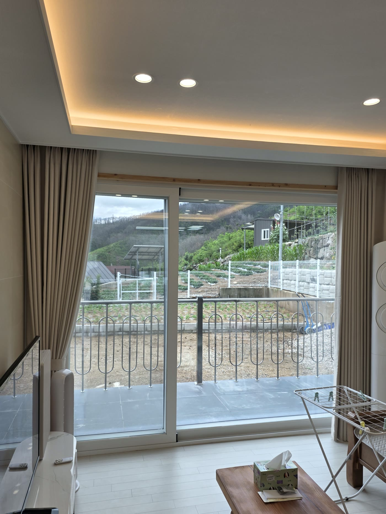
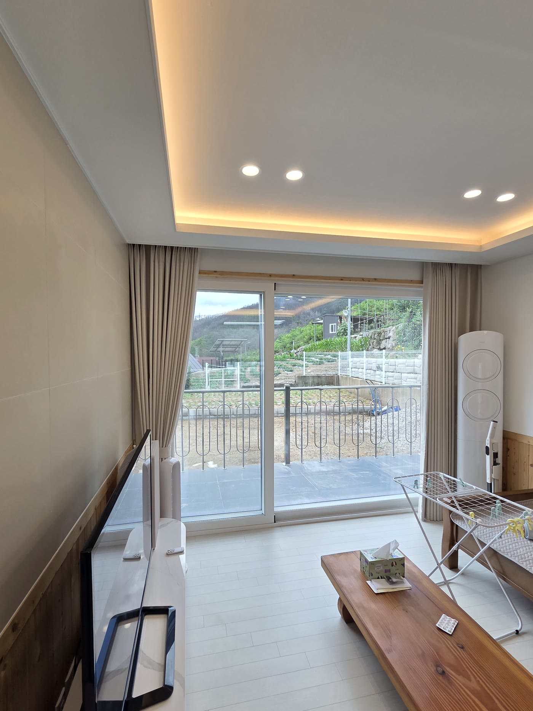
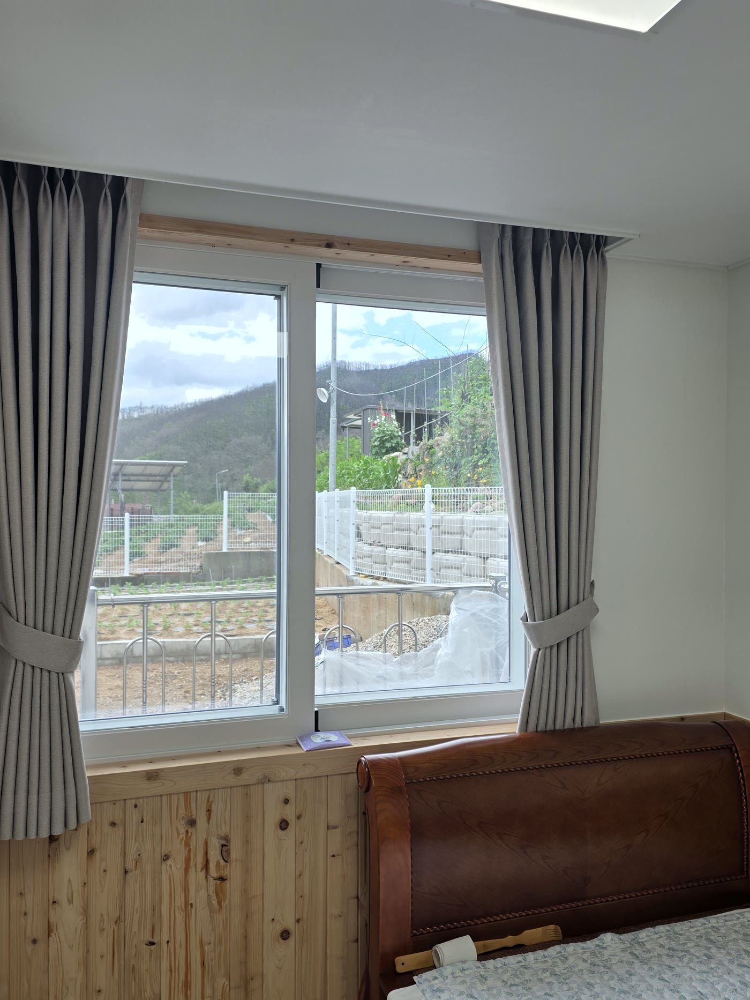
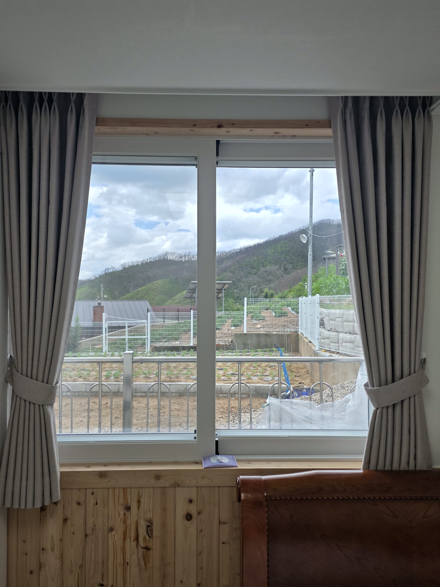
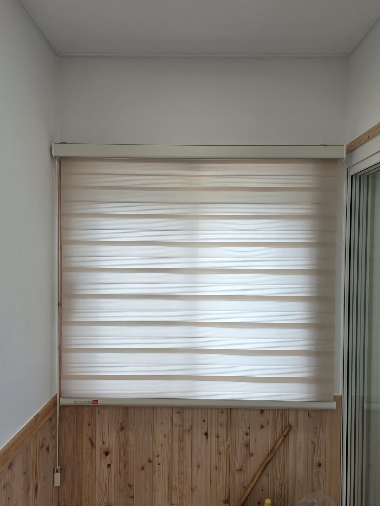

2026년 6월 20일 시공
영덕 지품면 신축주택
암막커튼 두배 나비주름 시공후기

영덕 지품면에 다녀왔습니다.
지난해 산불로 살던 집이 전소되어, 같은 자리에 새로 지으신 단독주택이었습니다.
홀로 지내실 어머님이 편안하게 생활하실 공간이라, 더 신경 써서 시공한 현장이었습니다.
거실과 안방은 암막커튼 두배 나비주름으로, 현관창과 옷방은 콤비블라인드로 마감했습니다.
단독주택은 단열을 먼저 생각합니다
어머님이 요청하신 건 무엇보다 따뜻한 집이었습니다.
단독주택은 아파트보다 외기에 닿는 면이 많아, 겨울 외풍과 여름 햇빛의 영향을 크게 받습니다.
그래서 거실과 안방만큼은 두꺼운 암막 원단으로 잡았습니다.
암막커튼은 빛을 거의 들이지 않아, 여름 햇빛 차단과 겨울 냉기 차단에 모두 효과적입니다.
창과 커튼 사이에 공기층이 생기면서 한 겹 단열재 역할을 해 주기 때문입니다.
어머님이 주무시는 안방은 어둡고 아늑하게, 거실은 낮의 생활공간으로 포근하게 잡아 드렸습니다.

주름은 두배 나비주름으로 잡았습니다
여기에 주름은 두배 나비주름으로 잡았습니다.
두배 주름은 창 폭의 두 배 분량으로 원단을 넉넉히 써서 주름을 풍성하게 잡는 방식입니다.
주름이 깊고 일정하게 떨어져, 같은 원단이라도 훨씬 단정하고 고급스럽습니다.
커튼을 걷었을 때도 양옆으로 가지런히 모입니다.
색은 집 전체 톤에 맞춰 거실은 베이지, 안방은 한결 차분한 연브라운으로 나눴습니다.
편백 루버와 밝은 벽지에 자연스럽게 어울려, 오래 보셔도 질리지 않습니다.

현관창과 옷방은 콤비블라인드로
현관 쪽 창과 옷방에는 콤비블라인드를 베이지로 달았습니다.
커튼을 달기엔 공간이 좁은 창이라, 줄 하나로 빛과 시선을 조절하는 콤비블라인드가 깔끔하게 맞습니다.
두 겹 원단을 나란히 겹치면 빛과 시선을 가려 주고, 살짝 어긋내면 그 틈으로 은은하게 빛이 듭니다.
조작이 간단해 어머님이 쓰시기에도 부담이 없습니다.

창마다 하나씩 실측해 맞췄습니다
신축이라 창마다 크기와 형태가 제각각이었습니다.
거실의 넓은 통창, 안방의 중간 창, 현관·옷방의 작은 창까지 각 창을 하나씩 실측했습니다.
커튼 봉과 블라인드 브래킷은 편백 마감과 벽 라인에 맞춰 단정하게 잡았습니다.
두배 주름은 원단 사용량이 많은 만큼 주름 간격을 일정하게 유지하는 게 관건이라, 창 전체에 주름결이 고르게 떨어지도록 시공했습니다.

관리도 어렵지 않습니다
암막커튼은 평소 가볍게 먼지를 털어 주시면 됩니다.
세탁이 필요할 때는 중성세제로 약하게 손세탁하거나 드라이를 권합니다.
강하게 비틀어 짜면 주름이 흐트러지니, 물기만 가볍게 빼서 걸어 말리시면 형태가 오래 유지됩니다.
콤비블라인드는 마른 천이나 먼지떨이로 결을 따라 살살 닦아 주시면 됩니다.
산불로 모든 걸 잃으신 자리에 새로 올린 집인 만큼, 단열과 편의를 가장 먼저 생각하며 시공했습니다.
거실·안방은 암막커튼으로 포근하게, 현관·옷방은 콤비블라인드로 깔끔하게 — 새 보금자리가 한결 아늑하게 정리됐습니다.
영덕을 포함한 대구·경북 전 지역, 단독주택·아파트 커튼 시공이 고민되시면 편하게 문의 주세요.